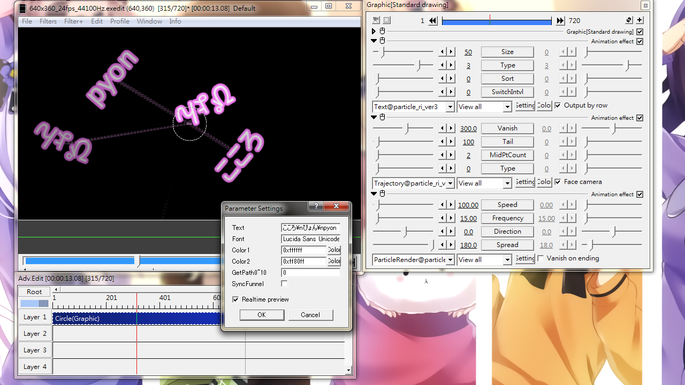
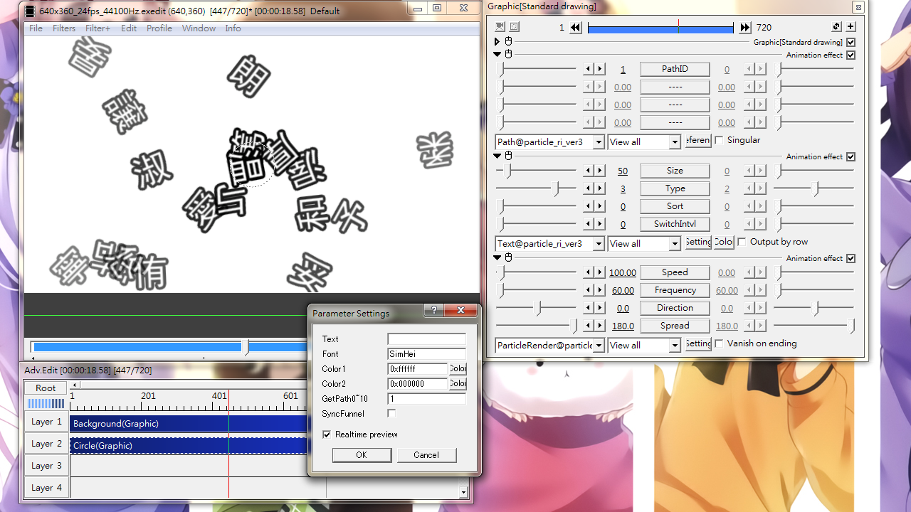
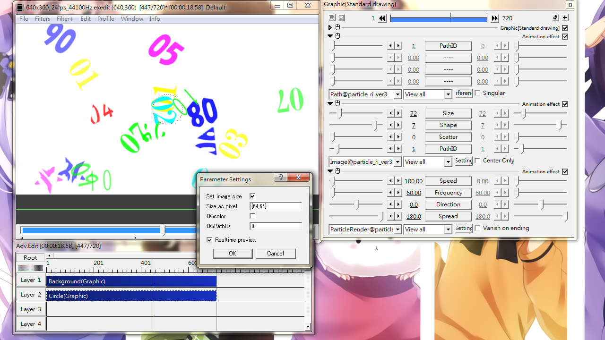
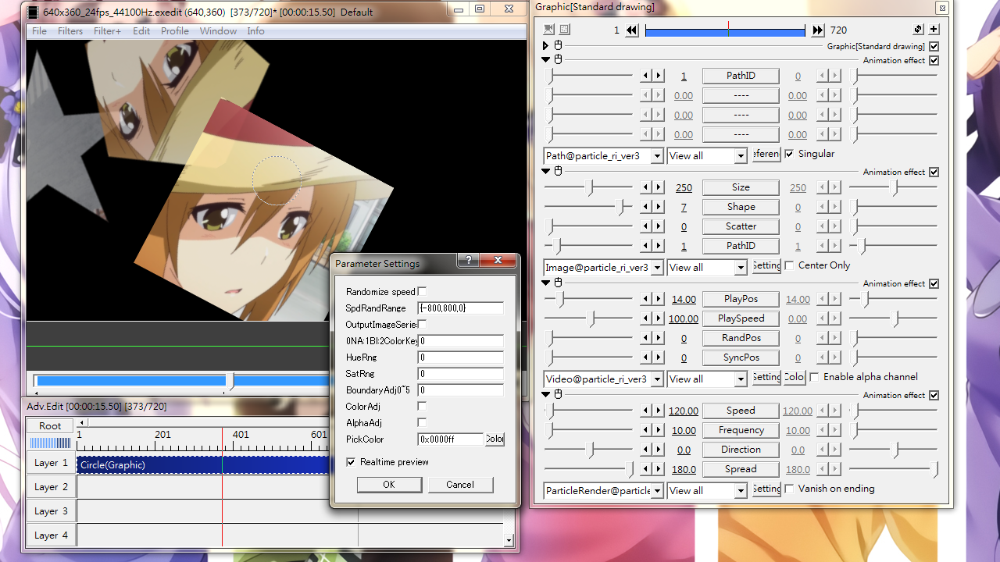

Fig11A: Emitting Text. This example directly entered the text to be displayed in the setting dialog. Note the \n which represents newline. The newline behaviour will not be visible unless the Output by row check box is ticked.

Fig11B: Emitting Text as saved in an external file. The Path@ section already set to pointing an external file. Note the PathID(Path@) and GetPath(Text@) are all set to 1.
Text
Emit text as particles.
Sliders
Size
Font size
Type
0: Normal
1: Shadowed
2: Thin shadow
3: Bordered
4: Thin border
Sort
Text output order
0: Same as input order
1: Reverse of input order
2: Random order
SwitchIntvl
By default (0), the text of a particle is fixed on emission. Setting a +ve value in this field allows a particle to change its text over its survival time.
Value as frame count
When Sort=0, text will be replaced following input order; Sort=1 switch in reverse order; Sort=3 change in random.
Check box
Output by row: Normally each particle has only one character. When this box is checked, each particle can contains multiple characters and delimited/separated by \n. See Fig11A for example.
Setting dialog
Text
The text to be used in particles.
Font
Font of text.
If empty, assume last used font
Color1
Text core color.
Color2
Color of border or shadow.
GetPath0~10
Should be a number the same as PathID slider in Path@
Only used if the text is defined in an external file.
See Fig11B for details
SyncFunnel
When checked, use the same font settings for Funnel@ and Text@

Fig11C: Emitting Image(s) or Video(s). The Path@ section is required to set the file source.
Image
Emit custom image(s) with extra filtering.
Sliders
Size
Particle size after filtering
Shape
The shape of clipping mask to be applied on each particle.
Masking center is randomly chosen within the image.
0: no mask
1: Circle
2: Square
3: Triangle
4: Pentagon
5: Hexagon
6: Star
7: Randomly choose from 1~6 for each particle
8: Irregular trapezoid
Scatter
When set to 1, randomly shuffle the images order if Path@ points to an image series(i.e. images named as 2-digit numbers).
PathID
The source file(s) to be used as particle images. Correspond to the PathID in Path@.
If Singular option in Path@ is not checked, all .avi, .mp4, .flv, .bmp and .jpg in the same folder will be used. Tick Singular if you want to use the selected file only.
Check box
Center Only: when checked, the masking center will always be the center of original image.
Setting dialog
Set image size
Resize the source image prior masking.
Size_as_pixel
The target image size when Set image size above is enabled.
Format: {Width,Height}
If a single value is given, width and height will be the same.
BGColor
When checked, multiply background color (at emission origin) with the image.
BGPathID
To be used when BGColor is checked.
0: The current screen background is used.
> 0: Use an external image (in image original size) as background data. Needs an extra Path@ section.

Fig11D: Emitting Videos with control. The Image@ (or Text@) section is required. Video@ alone will not work.
Video
Requires Image@ or Text@ attached prior to this section. Process video and image series.
Sliders
PlayPos
The start of playback position as a percentage of video length.
0 starts from the beginning, 50 starts from the middle.
PlaySpeed
Playback speed as percent.
100 for normal speed, 200 for double speed.
RandPos
Set to 1 to randomize playback starting point.
SyncPos
Set to 1 to make all particles sharing the same scene.
Check box
Enable alpha channel: enable image transparency if the source file contains such information. Use with cautions.
Setting dialog
Randomize speed
Check to randomize playback speed.
SpdRandRange
Set the randomization range for playback speed.
Format: {lower limit,upper limit,option}
When option is 1, there will be 50% chance that the sign of the speed value be reversed.
OutputImageSeries
Output image series or text series instead of video from the source folder.
0NA:1Bl:2ColorKey
Enable chroma-keying or color-keying on source file.
0: None applied
1: Chroma key
2: Color key
HueRng
Hue/Brightness Range
First parameter for chroma key or color key.
SatRng
Saturation/Color difference range
Second parameter for chrom key or color key.
BoundaryAdj0~5
Boundary adjustment for chroma key.
0: None
1: For chroma key
2: For color key
ColorAdj
Color correction for chroma key
0: None
1: ON
AlphaAdj
Transparency correction
0: OFF
1: ON
PickColor
The primary sampling color for chroma/color-keying.